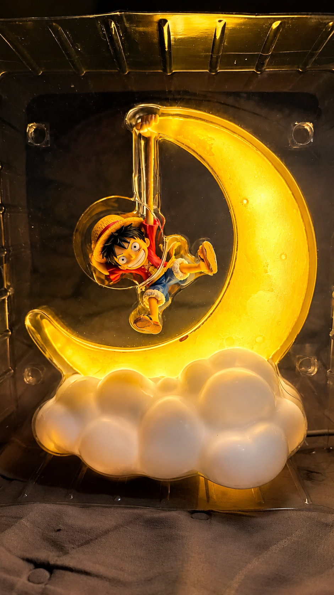
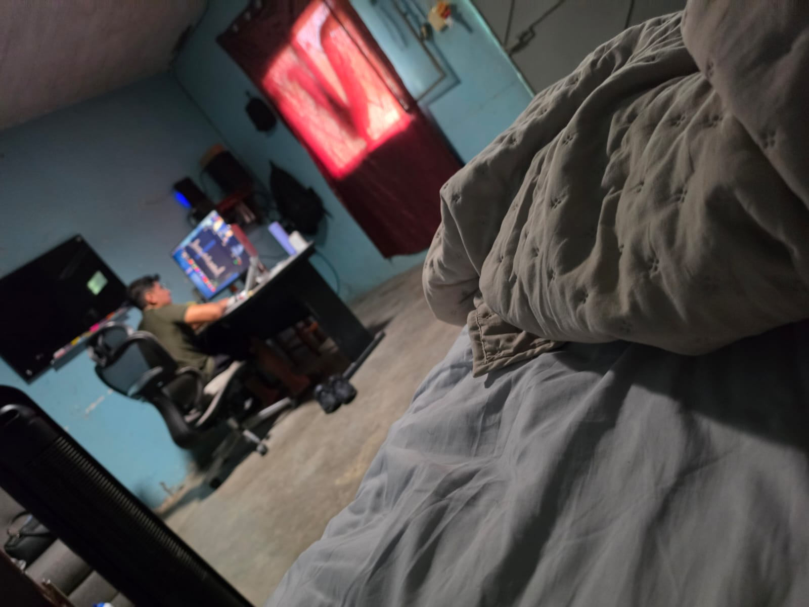
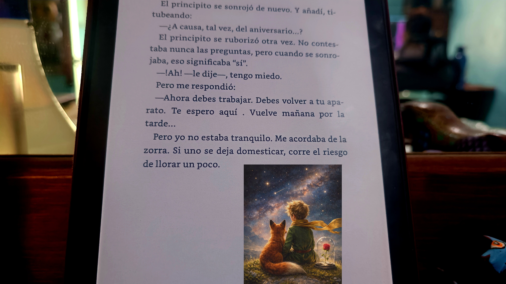

commit 0032
Date: —
Type: collection
🟡 Nosotros
🟢 Git Message
feat: documenting us
⚪ Story
Este commit no tiene una fecha.
Porque sería imposible ponerle una.
No pertenece a un solo día,
ni a un viaje,
ni a una salida,
ni a una noche en particular.
Este commit somos nosotros.
Todo aquello que no alcanzó a entrar
en los otros 31.
Porque cuando empecé a juntar nuestras historias,
me di cuenta de algo:
lo nuestro comenzó siendo algo muy casual
y, sin darnos cuenta,
se volvió cotidiano.
Y creo que eso es de las cosas más bonitas
que nos han pasado.
Al principio había que buscar el momento para vernos.
Después,
simplemente empezamos a encontrar la manera.
Mis horarios cambiaron.
Primero estaba en la mañana,
después en la noche,
y cada cambio de turno
significaba aprender nuevamente
cómo acomodarnos.
A veces me quedaba a dormir en tu casa
y salía de madrugada
porque tenía que ir a trabajar temprano.
Cuando entré a otro horario,
las cosas volvieron a cambiar.
Y entonces,
cuando teníamos clases de baile,
me quedaba a dormir contigo.
Hubo días,
semanas incluso,
en los que prácticamente sentía
que vivía más contigo que en mi propia casa.
Y eso nunca fue algo que planeáramos.
Simplemente pasó.
La rutina se fue convirtiendo
en parte de nosotros.
El almuerzo contigo.
La comida contigo.
Llegar a tu casa.
Quedarme un rato.
Ver qué hacíamos.
A veces cocinar para ti
o para tu hermano.
A veces simplemente estar.
Y quizá desde afuera
no parezca gran cosa.
Pero para mí,
eso era enorme.
Porque hay una diferencia
entre pasar buenos momentos con alguien
y sentir que esa persona
ya forma parte de tu vida cotidiana.
Y tú empezaste a formar parte de la mía.
También están esos detalles
que probablemente para cualquiera
parecerían insignificantes.
Como aquella vez que estaba en tu casa
y tocaron la puerta.
Era tu hermana.
Había hecho hot dogs.
Y no les puso cebolla.
Entonces me dijiste:
"¿Ya viste?
Ya saben que no te gusta la cebolla."
Y sí.
Era un hot dog sin cebolla.
Nada más.
Pero para mí no era nada más.
Era darme cuenta
de que ya conocían pequeños detalles sobre mí.
De que mi presencia en tu casa
ya era lo suficientemente habitual
como para que alguien pensara:
"Esto no le gusta."
Y ese tipo de cosas
son las que se me quedan.
También están esos días
haciendo absolutamente nada extraordinario.
Viendo series.
Películas.
Anime.
Compartiendo una pantalla
sin necesidad de estar haciendo algo más.
De las últimas series que vimos juntos
fue Off Campus.
Una historia romántica,
bonita,
de esas que terminábamos viendo
simplemente porque estábamos ahí.
Y eso también era muy nuestro.
No necesitábamos que cada encuentro
fuera una aventura.
A veces bastaba con estar juntos.
También recuerdo cuando te regalé
la lámpara de One Piece.
Sabía que te gustaba,
así que pensé en ti
cuando la vi.
Y después terminamos cenando tlayudas
dentro del carro.
Una escena que, probablemente,
si alguien más la viera
no tendría nada de extraordinario.
Pero recuerdo que me dijiste
que era uno de esos días
que no ibas a olvidar.
No sé si hoy tú lo recuerdes.
Yo sí.
Yo no lo he olvidado.
También estaban esos días
en los que yo estaba acostada
mientras tú programabas.
Tú frente a la computadora.
Yo simplemente ahí.
Cada uno haciendo lo suyo.
Y aun así,
compartiendo el mismo espacio.
A veces me despertaba porque entraba luz
por el tragaluz.
Y tú, en medio de la noche,
ibas a taparlo
para que pudiera seguir durmiendo.
No era un gran gesto.
No hubo flores.
No hubo una declaración.
No hubo nada espectacular.
Solo alguien pensando:
"Le está molestando la luz."
Y haciendo algo al respecto.
Y creo que esos son
los detalles que más recuerdo.
También me decías:
"Ten,
ponte a leer para que no te aburras."
Y me recomendaste El Principito.
Un libro que terminó convirtiéndose
en uno de mis favoritos.
Otra pequeña cosa
que terminó quedándose conmigo.
Después están todas esas ocasiones
en las que nuestras vidas empezaron
a mezclarse con las de los demás.
Como el baby shower de Silvia.
Tú no tenías ninguna obligación
de estar ahí.
Y aun así,
te integraste.
Ayudaste a adornar,
conviviste con los demás
y simplemente formaste parte del momento.
Como si fuera lo más natural del mundo.
O aquella vez que fuimos al gimnasio
y casi veo a San Pedrito. 😂
Me sentía tan mal
que casi estaba tocando las puertas.
Y tú estabas ahí.
O cuando apenas fuimos a correr
y terminamos yendo por un elote.
Porque aparentemente
ese era el verdadero objetivo
del ejercicio. 😂
O cuando me ayudaste a subir
la cama de Karime.
Una cama pesada,
una tarea que no tenía absolutamente nada
de romántica ni especial.
Pero ahí estabas,
ayudando.
Y esas cosas también cuentan.
O cuando fuimos al cine a ver Spider-Man.
Esta vez tampoco estuvimos solos.
Fuimos con Yami y con Karime.
Y otra vez,
nuestras vidas se mezclaron
con las personas que queremos.
Porque eso también ha cambiado.
Ya no somos solamente tú y yo
haciendo cosas juntos.
También hemos aprendido
a compartir nuestros espacios,
nuestras personas,
nuestras pequeñas rutinas.
Y cuando pienso en todo eso,
me doy cuenta de que los otros 31 commits
solo cuentan una parte de la historia.
Cuentan los viajes.
Los partidos.
Las cenas.
Los momentos especiales.
Las noches.
Las aventuras.
Pero este commit cuenta
lo que estaba entre cada uno de ellos.
Los días normales.
Las horas sin plan.
Las veces que me quedé dormida contigo.
Las veces que tú estabas programando
mientras yo simplemente estaba ahí.
Las comidas.
Las series.
Los silencios.
Los libros.
Los favores.
Los pequeños cuidados.
Los "ya saben que no te gusta la cebolla".
Los "ten, ponte a leer".
Los "voy a tapar el tragaluz".
Los elotes después de correr.
Las tlayudas dentro del carro.
Las camas que había que subir.
Los capítulos que vimos juntos.
Las veces que simplemente compartimos espacio
sin necesidad de hacer nada extraordinario.
Y creo que eso es lo que más me sorprende.
Porque algo que comenzó tan casual
terminó convirtiéndose
en una parte muy cotidiana de mi vida.
Nos fuimos adaptando.
A mis horarios.
A tus tiempos.
A nuestras responsabilidades.
A los cambios.
A nuestras vidas.
Y de alguna manera,
siempre encontramos la forma
de coincidir.
No quiero decir que todo haya sido perfecto.
No lo ha sido.
Hemos tenido dudas.
Momentos complicados.
Cosas que cambiaron.
Cosas que quizá todavía no entendemos del todo.
Pero también hemos crecido.
Yo he cambiado.
Tú has cambiado.
Y nosotros también.
Hemos aprendido a conocernos
de una manera mucho más profunda
que cuando todo comenzó.
No sé exactamente qué nombre
tenga todo esto.
No sé si algún día lo tendrá.
Pero sí sé lo que significa para mí.
Estoy muy agradecida
de que estés.
De que nuestros caminos
se hayan cruzado.
No sé si tú te pusiste en mi camino
o si fui yo quien se puso en el tuyo.
Pero qué bueno que pasó.
Porque entre tantos viajes,
tantos partidos,
tantas fotos,
tantas noches
y tantos momentos que sí alcanzaron
a convertirse en un commit...
hay otros cientos
que nunca fueron documentados.
Y probablemente
esos son los que más importan.
Los que nadie fotografió.
Los que no tuvieron una fecha especial.
Los que no parecían suficientemente importantes
para convertirse en una historia.
Pero que, juntos,
construimos esto.
Esto que somos.
Tú y yo.
Nuestros momentos.
Nuestra rutina.
Nuestra complicidad.
Nuestra amistad.
Nuestra historia.
Y si los otros 31 commits
cuentan lo que hemos vivido...
este último cuenta
por qué todo eso importa.
Porque al final,
no fueron los viajes.
No fueron los partidos.
No fueron las cenas.
No fueron las fotos.
Fuiste tú.
Fui yo.
Fuimos nosotros.
🟣 Developer Notes
Date: undefined.
Location: everywhere.
Duration: ongoing.
Routine: established.
Schedules: continuously changing.
Adaptation system: operational.
Cebolla: permanently excluded. 😂
One Piece: deployed.
El Principito: successfully recommended.
Series: consumed.
Anime: consumed.
Movies: consumed.
Tlayudas in car: memorable.
Elote after running: questionable fitness strategy. 😂
Baby shower support: completed.
Bed relocation mission: completed.
Spider-Man: watched.
Tragaluz: successfully covered.
Sleep mode: protected.
Daily life: shared.
Friendship: deeply integrated.
Small gestures: highly significant.
Unwritten memories: countless.
Project status:
No longer just a collection of moments.
It's us.
🟢 Impact on Project
+ 31 documented moments connected.
+ Hundreds of undocumented moments acknowledged.
+ Routine officially recognized as part of the story.
+ Friendship strengthened.
+ Personal growth documented.
+ Shared life progressively integrated.
+ Small gestures promoted from "insignificant" to "important."
+ Ordinary days officially archived.
+ The space between the big moments is now part of the story.
+ "Nosotros" successfully defined.
🟢 Commit Status
✔ Completed
✔ Reviewed
✔ Deeply Personal
✔ No Date Required
✔ No Single Event Required
✔ Impossible to Reproduce
✔ One of a Kind
✔ Ready for Release
32 commits. Because you turn 32.
🖼 Recuerdos

One Piece (espero que te haya gustado).

Un día normal (Manuel de fondo, programando).

El Principito 🌹 (si uno se deja domesticar corre el riesgo de llorar un poco).